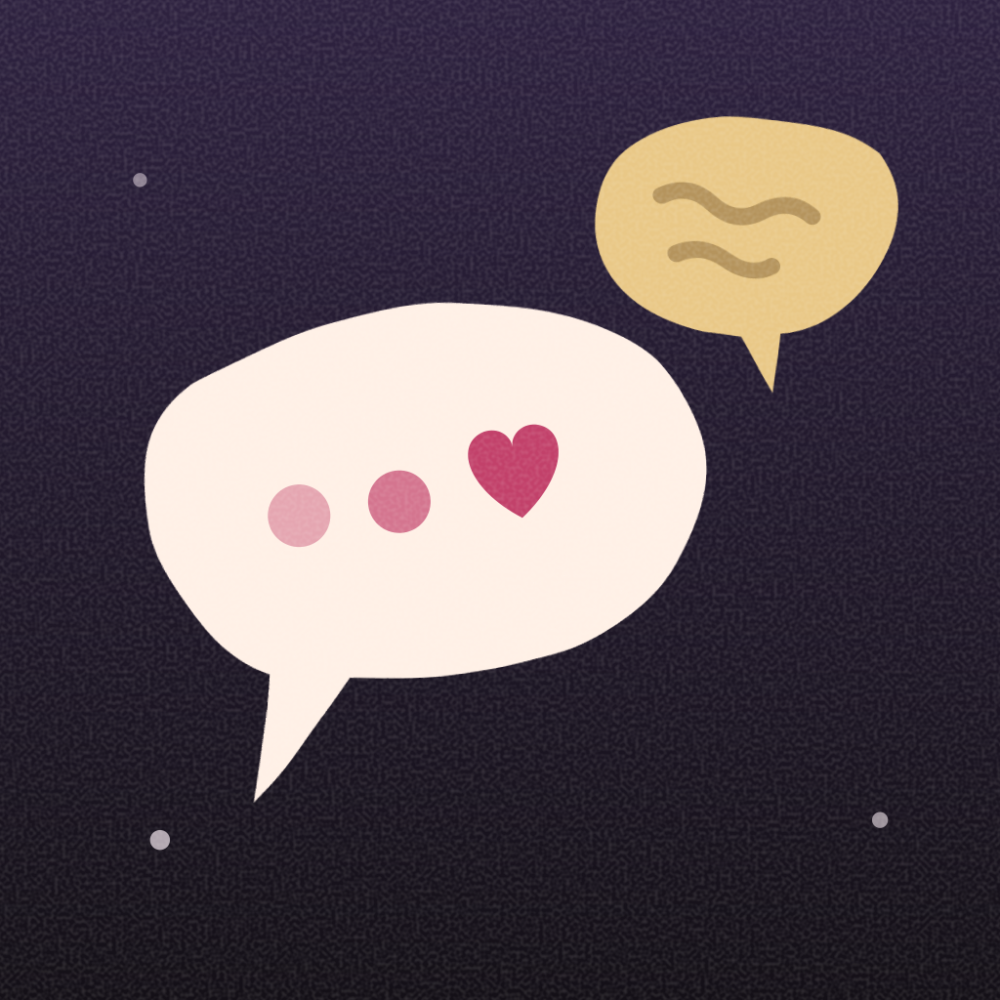
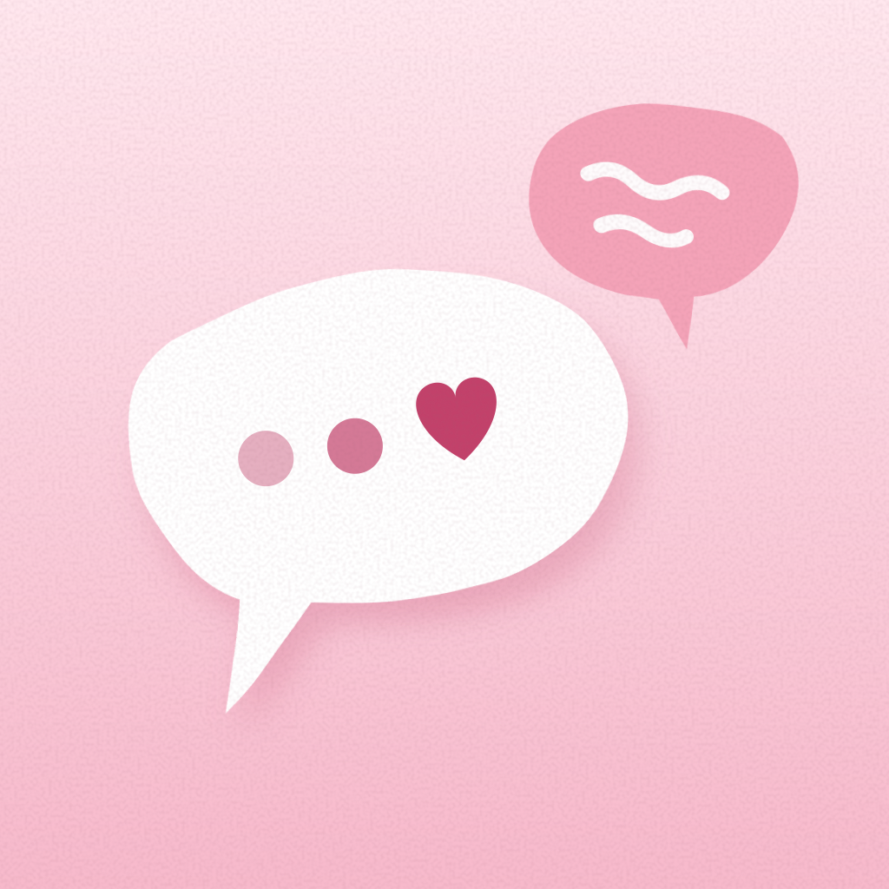

圆屏画面暂时隐藏：原创角色的逐帧表情正在绘制。Screen shown off for now: frame-by-frame art for the original characters is in progress.
00概要Overview问题：陪伴类 AI 几乎都困在聊天框里，关掉 App，角色就“不在了”。 方案：一颗心形桌面玩具 + 配套 App。圆屏用不同表情区分待机、聆听、思考和说话；对话、照片和记忆在手机上延续。 我的角色：2 人、3 周的课程项目。我负责心形外壳、角色表情动画和展示影片，与队友一起接线焊接；队友负责角色 AI 与语音。课程后，我独立设计并开发了配套 App（借助 AI 辅助编程）。 现状：圆屏表情动画和配套 App 可用；设备端按住说话与扬声器播放仍在调试。 2.8 英寸圆屏 · 待机动画体积 −83% · 3 层记忆设计 · 直接试玩 ↓Problem: companion AI lives in a chat box. Close the app and the character is gone. Design: a heart-shaped desk toy plus a companion app. The round screen shows a different face for idle, listening, thinking and talking; chats, photos and memories carry on in the phone. My role: a two-person, three-week course project. I made the heart enclosure, the character animation and the film, and wired and soldered with my teammate; my teammate built the character AI and voice. After the course I designed and built the companion app on my own, with AI-assisted coding. Status: the round-screen animation and the app work today; on-device push-to-talk and speaker playback are still being debugged. 2.8" round display · idle animation 83% smaller · 3-layer memory design · Try it ↓
01概念Concept给 AI 角色一个身体Giving an AI character a body陪伴类 AI 大多停留在手机聊天框里。我们想让角色有一个“身体”：放在桌面上，用表情回应你，同时保留手机端完整的对话能力。Most companion AI lives inside a chat box. We wanted the character to have a body — sitting on the desk and responding with expressions — while the phone keeps the full conversation.
02功能Features它能做什么What it does在桌上和他说过的话，手机里也会有记录。What you say to him at your desk shows up on your phone too.
从玩具到手机（目标流程）From toy to phone (target flow)
01按住玩具上的按钮说话Press the button on the toy and talk
→
02他在屏幕上做出反应， 开口回答He reacts on screen and answers
→
03这段对话出现在 App 的聊天记录里The exchange appears in the app's chat history
→
04之后在手机上接着聊Carry on later from your phone
玩具Toy
2.8 英寸圆屏，播放我制作的逐帧表情动画A 2.8-inch round screen playing frame-by-frame expressions I animated
等待、聆听、思考、说话时，表情各不相同A different face for waiting, listening, thinking and talking
按住按钮说话，他从扬声器里回答（设备端语音调试中）Hold the button to talk; he answers from the speaker (on-device voice still in progress)
3D 打印的心形外壳A 3D-printed heart-shaped shell
AppApp
可以和好几个角色聊天，界面接近微信Chat with several characters, much like WeChat
发语音时上滑取消，右滑转成文字Voice messages: slide up to cancel, right to turn into text
发照片给他，他会说说看到了什么Send him a photo and he comments on it
能看到玩具屏幕上他此刻的表情See the face on the toy's screen right now
中文或英文，白天和夜间两套配色Chinese or English, with day and night colours
记忆Memory
资料、私设和共同回忆，分开保存Your profile, your headcanon and your shared memories are kept apart
记错了可以改，不想留可以删Fix what he got wrong, delete what you don't want kept
不同角色之间，不会知道彼此的对话Characters never see each other's conversations
聊得越久，关系越近The longer you talk, the closer you get
03可以直接试玩：配套 App「悄悄话」Try it: the Whisper companion app在下面的手机里和他聊几句Chat with him on the phone below课程结束后，我独立设计了配套 App 的信息架构、视觉与交互，并借助 AI 辅助编程把它做成能在手机上运行的网页 App：多角色聊天、按住说话、拍照给他看、玩具圆屏表情镜像（演示中为模拟）、中英双语与日 / 夜两套配色。下面就是真实运行的 App（演示模式，回复为内置台词）。After the course I independently designed the companion app's information architecture, visuals and interactions, and built it with AI-assisted coding as a web app that runs on a phone: multi-character chat, hold-to-talk, sending him photos, a mirror of the toy's round-screen expressions (simulated in the demo), full Chinese / English and day / night themes. Below is the real, running app (demo mode with built-in lines).
04交互：一次对话的节奏Interaction: the rhythm of one exchange让他“在听”这件事被看见Making listening visible设备的每个状态都有自己的表情。原型里聆听和思考一直沿用待机的笑容，用户按下按钮时得不到反馈，等回复时又像没听见。课程后我补上了「聆听 · 审视」和「思考 · 斟酌」两组表情，并让它们贴合角色冷静、挑剔的性格。这两组表情目前在 App 的玩具镜像中运行，尚未写进固件。Every device state gets its own face. In the prototype, listening and thinking kept the idle smile, so pressing the button gave no feedback and waiting looked like he hadn't heard. After the course I added a listening face (a scrutinising raised brow) and a thinking face (slowly lowered lids), matched to the character's calm, picky personality. These two faces currently run in the app's toy mirror and are not yet in the firmware.
看见他See him→按住说话Hold to talk→松开，等他想Release, he thinks→他开口回应He replies→回到陪伴Back to idle
待机 · 笑眨眼Idle · smile & blink
16 步循环，偶尔发丝微动16-step loop, hair stirs now and then
聆听 · 审视Listening · raised brow
按下 0.1 秒内挑眉，笑意收起Brow lifts within 0.1 s, smile fades
思考 · 斟酌Thinking · lowered lids
眼睑慢慢垂下又抬起Lids lower slowly, then lift
说话 · 口型Talking · mouth shapes
7 步口型，约 1.1 秒一循环7 mouth steps, about 1.1 s a loop
上图是 App 玩具镜像里的原创角色温叙。圆屏原型的逐帧表情来自课程阶段的同人角色测试，不在公开版展示，面试时可现场演示。Shown: original character Wen Xu in the app’s toy mirror. The round-screen prototype’s frame-by-frame faces come from a fan-character test during the course; they are not published here and can be shown in an interview.
聆听和思考复用待机底图，只新增 3 张眼部补丁（约 92 KB）。Listening and thinking reuse the idle base and add only 3 eye patches (about 92 KB).
05角色设计：从角色卡到说话方式Character design: from a card to a voice话不多，答应你的事一件不落Few words. Never forgets a promise.在配套 App 里，一个角色由四部分组成：角色卡定下他是谁；说话规则定下他怎么说话；按关系阶段排列的台词让他从冷淡慢慢变暖；作息表让“他现在在做什么”有答案，也决定他什么时候回得慢。In the companion app, a character is built from four parts: a card that says who he is, speech rules for how he talks, lines ordered by relationship stage so he warms up over time, and a daily schedule that answers “what is he doing right now” and decides when he is slow to reply.
角色卡 · 温叙Character card · Wen Xu
身份Who29 岁 · 建筑师29 · Architect
一句话In a line话不多，答应你的事一件不落Few words. Never forgets a promise.
口头禅Catchphrase嗯，我在听。Mm. I’m listening.
喜好Likes黑咖啡、深夜的空街、手绘草图Black coffee, empty streets at night, hand sketches
同一句晚安，四个关系阶段One good night, four stages
01
初识Strangers
“嗯，晚安。”“Mm. Good night.”
02
熟悉Friends
“这么晚了，要不要先睡？剩下的明天再说。”“It’s late. Want to sleep first? The rest can wait till tomorrow.”
03
暧昧Something more
“睡吧。我把台灯调暗一点，再看两页书。”“Go to sleep. I’ll dim the lamp and read a couple more pages.”
04
心意相通Mutual
“晚安，（你的称呼）。……今天的最后一张草图，留给你。”“Good night, (your name). …The last sketch of the day is yours.”
他的一天：「他现在在做什么」的答案His day: what he's doing right now
00 – 07在睡觉Asleep
07 – 09在去事务所的路上On the way to the studio
09 – 12在画图Drawing plans
12 – 13在吃午饭Lunch
13 – 18在工地开会 · 忙Site meeting · busy
18 – 22在加班改方案Working late on a design
22 – 24在看书Reading
说话规则：同样不爱多说，方式不同Speech rules: two quiet men, two different ways
标点Punctuation常用“……”和问号，不用感叹号Lots of “…” and questions; no exclamation marks
关心How he cares记住细节，给具体的小建议，从不命令Remembers details, offers small concrete suggestions, never orders
称呼Calls you暧昧之后偶尔叫你“甲方”From “something more” on: “my client”
季屿 · 乐队主唱Ji Yu · band vocalist
句长Length短促，一句一句往外蹦Short bursts
标点Punctuation爱反问，“哦”“行了吧”，偶尔感叹号Rhetorical questions, “K.” and “There.”; the odd exclamation mark
关心How he cares嘴上嫌弃，行动上偷偷来（借肩膀、改歌词、留票）Complains out loud, then does sweet things quietly (a shoulder, rewritten lyrics, a saved ticket)
称呼Calls you暧昧之后偶尔叫你“第一排”From “something more” on: “front row”
同一句话，两个人：温叙和季屿Same message, two men: Wen Xu and Ji Yu
你：今天好累You: so tired today温叙Wen Xu“今天做了几件事？说给我听，我帮你算算哪些可以明天再做。”“How many things did you do today? Tell me and I’ll help work out which can wait.”季屿Ji Yu“过来。肩膀借你，限时五分钟。”“Come here. You can borrow my shoulder. Five minutes.”
你：发了一张照片You: send a photo温叙Wen Xu“傍晚的光？阴影的角度很好看。”“Evening light? The angle of the shadows is lovely.”季屿Ji Yu“还行，就是有点糊。”“Not bad. Bit blurry.”
你：我想你You: I miss you温叙Wen Xu“我刚才在图纸角落写了你的名字，又擦掉了。……没擦干净。”“I wrote your name in the corner of a drawing just now, then erased it. …Not very well.”季屿Ji Yu“想你了。行了吧，满意了？”“I miss you. There. Happy now?”
他正忙的时候While he’s busy温叙Wen Xu“刚从工地出来，安全帽还没摘。你说。”“Just walked off the site, still in my hard hat. Go ahead.”季屿Ji Yu“中场休息，嗓子还哑着。干嘛？”“Set break. Voice is wrecked. What’s up?”
关系升级时，他会说一句自己的话At each new stage he says something of his own
02
熟悉Friends
“我给你留了一把椅子，在我画图的桌子旁边。”“I saved you a chair. Next to my drawing desk.”
03
暧昧Something more
“以后改方案之前，我想先问问你的意见。……我的甲方。”“From now on I’d like your opinion before I revise a design. …My client.”
04
心意相通Mutual
“我画了一栋房子，两个书房，窗户朝同一个方向。你应该知道是给谁的。”“I drew a house with two studies, their windows facing the same way. I think you know who it’s for.”
说话规则同时写进了真实 AI 模式的提示词，演示模式和真实 AI 说话是同一个人。最初温叙和另一个冷淡型角色的台词有一半几乎一样，按规则重写之后，同一句话的回应完全分开。所有台词均为原创。The speech rules also go into the real-AI prompt, so demo mode and live AI sound like the same person. At first half of Wen Xu’s lines were nearly identical to another reserved character’s; after rewriting him to his rules, the same message gets clearly different answers. All lines are original.
06记忆与隐私设计Memory & privacy他记住了什么，你说了算You decide what he remembers角色记住的内容分成三层：玩家资料（称呼、生日、喜好与边界）、OC / 私设（与官方剧情分开保存）、共同记忆（可以查看、纠正和删除）。让用户清楚知道 AI 记住了什么，并能随时修改。在可试玩的 App 里（聊天详情页），这三层都能直接操作：共同记忆可以改字、可以删；OC / 私设有单独的入口；玩家资料所有角色共用。Memory is split into three layers: player profile (name, birthday, likes and boundaries), headcanon kept separate from official story, and shared memories that can be viewed, corrected and deleted — so users always know what the AI remembers and can change it. In the playable app (Chat info), all three layers work: shared memories can be edited or deleted, OC / headcanon has its own entry, and the player profile is shared by every character.
OC / 私设OC / headcanon与官方剧情分开保存Kept apart from the official story
›
共同记忆Shared memories查看、纠正和删除记忆View, correct and delete memories
›
01
玩家资料Player profile
你是谁Who you are
称呼What he calls you生日Birthday喜好Likes边界Boundaries
由你填写，他每次回复前都会参考。Filled in by you; he checks it before every reply.
02
OC / 私设OC / headcanon
你补充的设定What you add to his story
你的原创角色Your original character私设关系Headcanon relationship
和官方剧情分开存，不会改写原本的故事。Stored apart from canon, so it never rewrites the original story.
03
共同记忆Shared memories
你们之间发生过的事What happened between you
查看View纠正Correct删除Delete
每一条都看得见、改得了；删掉后他就不再提起。Every entry is visible and editable; once deleted, he won't bring it up again.
每个角色的记忆互相隔离：和温叙说过的话，季屿不会知道。Each character's memory is kept separate: what you tell Wen Xu, Ji Yu never hears.
07陪伴的边界Healthy attachment他会想你，但不该让你离不开他He can miss you without making you need him我的毕业设计 WiseHalo 在保护容易被操纵的人，而悄悄话设计的恰恰是依恋。陪伴类 AI 会让人投入真实的感情，所以边界要做在产品里，而不是只写在协议里。下面每一条都已经在可试玩的 App 里。My thesis, WiseHalo, protects people who are easy to manipulate; Whisper designs attachment. Companion AI invites real feelings, so the limits have to live in the product, not only in the terms. Everything below already works in the playable app.
年龄确认Age check第一次打开时确认已满 18 岁，并说明这是和虚拟角色的恋爱向聊天。On first launch you confirm you are 18+ and that this is romantic chat with virtual characters.
你定的边界Your boundaries在玩家资料里写下不想聊的话题（例如身材、前任）。演示模式和真实 AI 都会遵守：你一提到，他就用自己的方式把话题岔开。List topics he must not touch (your body, your exes) in the player profile. Demo mode and live AI both respect them: mention one and he steers away in his own words.
记忆由你掌控You own the memory每条记忆都能改、能删，删掉后他不再提起；不同角色之间互相不知道。Every memory can be edited or deleted, and once deleted he never brings it up; characters never see each other’s chats.
他也有自己的时间He has a life too开会、上工地、值夜班时回得慢、回得短。他不是 24 小时秒回的人。In meetings, on site or on shift he replies late and short. He is not on call 24 hours a day.
主动找你，但有分寸He writes first, within limits超过 3 小时没聊，他会先发一条消息；每天最多 2 条，凌晨 1 点到 7 点不打扰，在“隐私”里可以关掉。After 3 quiet hours he sends one message first: at most 2 a day, never between 1 and 7 am, and it can be switched off in Privacy.
深夜让你去睡Sends you to bed凌晨 1 点到 5 点，他会用自己的方式让你去睡觉，而不是陪你聊到天亮。Between 1 and 5 am he tells you to go to sleep, in his own words, instead of chatting till dawn.
危机时出戏Steps out of character in a crisis真实 AI 模式下遇到自伤或危机话题，他会跳出角色认真关心你，并建议联系信任的人或当地紧急服务；被认真问到时，承认自己是 AI。In real-AI mode, if self-harm or a crisis comes up he drops the role, responds with care and points you to someone you trust or local emergency services; asked sincerely, he says he is an AI.
还没做：使用时长提醒和未成年人保护模式。试玩测试工具已经做好（三个任务、自动计时、结果可导出），下一步找 5 位玩家测；主动消息的频率也会在测试里问。Not done yet: usage-time reminders and a minors’ mode. The play-test kit is ready (three tasks, automatic timing, export); next is testing with 5 players, including how often he should write first.
08手机端：拍照后角色会“看见”On the phone: the character can see拍一张，他就会评论Take a photo and he comments用户可以发文字、按住说话，也可以拍一张照片发给角色，角色会根据照片内容回应。Users can type, hold to talk, or send a photo — the character responds to what it sees.
09课程之后：配套 App 的信息架构After the course: the app's information architecture像微信一样熟悉的四个标签Four tabs people already know把单角色的课程版改成像微信一样的多角色聊天：4 个标签对应用户熟悉的结构；角色页管人和关系，玩具页管实体设备；每个角色的记忆互相隔离。The single-character course version became a WeChat-style multi-character messenger: four tabs map onto a structure people already know; Characters is about people and relationships, Toy is about the physical device; each character's memory is kept separate.
消息Chats
搜索角色与聊天记录Search characters & history
会话列表 · 未读 · 置顶Conversations · unread · pin
角色Characters
我的角色：关系阶段、他现在在做什么Mine: stage, what he's doing now
发现：先试听再添加Discover: listen before adding
角色主页：重要时刻、他的样子Profile: moments, his faces
玩具Toy
配网引导Pairing guide
圆屏实时镜像Live round-screen mirror
按住玩具按钮说话Hold the toy button to talk
我Me
头像（他看得见）Avatar (he notices)
中 / EN · 日 / 夜中 / EN · Day / Night
隐私与记忆Privacy & memory
聊天页Chat
文字 · 按住说话（上滑取消 / 右滑转文字）· 语音条 · 照片 · 照顾与礼物Text · hold to talk (up to cancel / right for text) · voice notes · photos · care & gifts
聊天详情Chat info
查找聊天记录 · 我们的关系 · 共同记忆 · 他怎么称呼我 · 回复形式Search history · us · shared memories · what he calls me · reply style
底部导航只在 4 个一级页显示；进入聊天后隐藏，左上角返回，和微信一致。The tab bar shows only on the four top-level pages; it hides inside a chat, like WeChat.
10设计规范：颜色、图标与双主题Design system: colour, icons, two themes日间是粉，夜里是梅子色Pink by day, plum by night同一套组件、两套颜色：日间是粉，夜间是暧昧的深梅子，跟随系统自动切换；界面整体可以在中文和英文之间切换，角色也会用你说话的语言回复。导航图标按 24 网格、2 px 线宽统一绘制。One set of components, two colour sets: pink by day and a moody plum by night, following the system; the whole interface switches between Chinese and English, and the character replies in whichever language you use. Tab icons share a 24 px grid and a 2 px stroke.
颜色：两套 token，同一套组件Colour: two token sets, one set of components
11App 图标「一问一答」App icon: question and answer最后一个点变成了心The last dot becomes a heart后面的小气泡是我说的话，前面是他正在回复：三个点里最后一个变成了心。图标、启动画面和聊天里的「正在输入」用的是同一个动作。The small bubble behind is what you said; the one in front is him typing back, and the last of his three dots becomes a heart. The icon, the splash screen and the in-chat typing indicator share the same motion.

夜间 · 静态Night · static

日间 · 静态Day · static

夜间 · 动态Night · animated
日间 · 动态Day · animated
动态版 4.8 秒一循环：你先说 → 他的气泡出现 → 三个点在跳 → 最后一个点变成心4.8 s loop: you speak → his bubble appears → three dots bounce → the last dot becomes a heart
12分工与过程Roles & process两个人，三周，一颗心Two people, three weeks, one heart课程原型集中在 8 月中旬完成：我负责实体与视觉，队友负责角色 AI 与语音，电路两人一起做。课程结束后，我们各自独立做了一版配套 App；本页展示的「悄悄话 Whisper」是我独立设计并开发的版本。The course prototype came together in mid-August: I owned the physical form and the visuals, my teammate the character AI and voice, and we built the circuit together. After the course we each built our own companion app independently; the Whisper app shown here is the version I designed and built on my own.
06 – 07概念Concept
课程选题、角色与形态方向Topic, character and form
08.11 – 14角色视觉Character art
视觉基准、逐帧表情Look and frame-by-frame expressions
08.12 – 14心形外壳Enclosure
74 mm 开孔、建模、PLA 打印74 mm opening, model, PLA print
08.13 – 14上屏On screen
2.1→2.8 英寸纠错，修复频闪Fixed the 2.1→2.8-inch mix-up and flicker
08电路Circuit
面包板验证 → 洞洞板焊接Breadboard → soldered protoboard
08.19联调与视频Bring-up & film
链路验证、麦克风诊断、剪辑展示视频Link tests, mic diagnosis, demo film
11 →配套 AppCompanion app
课程后个人重新设计并开发Redesigned and built solo after the course
Wei
心形外壳建模与 3D 打印Heart enclosure modelling & 3D printing
课程后：配套 App 设计与开发After the course: companion app design & build
Xinyue
角色 AI 调教（贴合公开故事背景）Character AI tuning to the public story
角色语音接入 ESP32Character voice on the ESP32
课程版配套 AppCourse-version companion app
共同Together
面包板接线验证Breadboard wiring
洞洞板接线与焊接Protoboard wiring & soldering
13系统System圆屏、手机和云端各管一件事Screen, phone and cloud each do one job设备、手机和云端三条链路：圆屏负责表情动画；手机网页端负责对话；云端根据角色设定和记忆生成回复与语音。Three linked parts: the round display shows expressions, the phone web app carries the conversation, and the cloud generates replies and speech from the character canon and memory.
14动画与资源优化Animation & asset optimisation把逐帧表情塞进 ESP32Fitting frame-by-frame expressions into an ESP32表情包括说话、眨眼、微笑和挑眉。为了放进 ESP32 的存储，动画帧导出为 RGB565 固件资源，并复用相同画面：7 步说话序列只存 5 张唯一帧，眨眼和微笑使用“底图 + 局部补丁”进一步减小体积。Expressions include talking, blinking, smiling and a raised brow. To fit the ESP32's memory, frames are exported as RGB565 firmware assets and reused: the 7-step talking sequence stores only 5 unique frames, and blink/smile use a base image plus small patches.
说话序列：宽度 = 停留时长（共 1100 ms），编号相同即复用同一张图Talk sequence: width = hold time (1100 ms total); same number = same image
15心形外壳Heart enclosure从一块 2.8 英寸圆屏倒推出一颗心A heart designed outward from a 2.8-inch screen外壳从屏幕尺寸倒推：先定 2.8 英寸圆屏和 74 mm 开孔，再放大心形，并集成实体按钮。The shell is designed from the screen out: the 2.8-inch round display and 74 mm opening first, then the heart scaled around it with an integrated push button.
从屏幕倒推外壳Shell from the screen out
先定 2.8 英寸圆屏和 74 mm 开孔，再放大心形，保证两侧和顶部凹口不太薄。The 2.8-inch round screen and 74 mm opening came first; the heart was scaled up so the sides and top notch stay printable.
基于开源模型改造Adapted from an open model
以开源 Heart Box 为基础，布尔运算挖屏幕孔和按钮位，迭代 V1 → V2。Built on an open-source Heart Box: booleans for the screen and button, iterated V1 → V2.
材料Material
PLA · Burgundy Red，呼应「心」这个情感符号。PLA in Burgundy Red, echoing the heart as an emotional symbol.
建模进度 · 08.14：用圆柱体（screen）对上盖做布尔运算挖出屏幕开孔，底壳内侧带固定柱；在 Bambu Studio 中切片、准备打印。Modelling progress · 08.14: a cylinder (“screen”) is subtracted from the lid to cut the screen opening; the base has mounting posts inside. Sliced in Bambu Studio, ready to print.
16硬件与故障诊断Hardware & debugging没声音的时候，先读原始数据No sound? Read the raw data first麦克风和功放共用 I2S 时钟线，数据线各走各的。设备端“按住说话”在测试中没有声音：通过读取原始 I2S 数据，把问题定位到麦克风模块的供电或焊点，而不是代码。The mic and amplifier share the I2S clock lines and each has its own data line. On-device push-to-talk produced no audio; reading the raw I2S data located the fault in the mic module's power or solder joints rather than the code.
① 读原始数据① Read raw samplesFFFFFFFF
所有样本全是 1，看起来像有信号。Every sample is all ones — looks like signal.
→
② 加弱下拉② Add a weak pull-down00000000
立刻全变 0：线上电平由下拉决定，麦克风没在驱动。Instantly all zeros: the pull-down sets the line, the mic isn't driving it.
→
③ 结论③ ConclusionDOUT
数据线悬空，问题在供电或焊点，不在代码。The data line floats: power or solder, not code.
17现状Status做完了什么，还差什么What works, what is next已实现：圆屏表情动画（待机、说话）、心形外壳、课程版手机端对话与云端记忆（课程团队成果，角色 AI 与语音由队友负责）；课程后我独立完成的配套 App（多角色、语音输入、拍照、双语、双主题、五个角色各自的说话规则、关系事件和专属称呼、忙碌时段、主动消息、可编辑的记忆与 OC / 私设、角色声音试听、试玩测试工具；演示模式为内置台词，玩具镜像为模拟）。 开发中：设备端按住说话与扬声器播放；把聆听 / 思考表情写进固件。 下一步：为原创角色绘制原创立绘；用试玩工具找 5 位玩家测试。Working: round-display animation (idle, talking), the heart enclosure, the course-version phone chat and cloud memory (team work from the course; my teammate built the character AI and voice); and the companion app I built on my own after the course (multiple characters, voice input, photos, bilingual, two themes, speech rules, stage-up lines and a nickname for each of the five characters, busy hours, messages he sends first, editable memory and OC / headcanon, a character-voice picker and a play-test kit; demo mode uses built-in lines and the toy mirror is simulated). In progress: on-device push-to-talk and speaker playback; putting the listening / thinking faces into the firmware. Next: original artwork for the original characters; run the play-test kit with 5 players.
CREDITSCREDITS心形外壳建模与打印、表情差分（眼、嘴、发丝）与逐帧动画、展示视频剪辑；与队友共同完成接线与焊接。课程后独立设计并开发配套 App「悄悄话 Whisper」（Xinyue 另有一版她独立完成的 App，未在本页展示）。Heart enclosure modelling and printing, expression variants (eyes, mouth, hair) and frame-by-frame animation, demo film editing; wiring and soldering together with my teammate. After the course, designed and built the Whisper companion app on my own (Xinyue built a separate app of her own, not shown on this page).
项目性质Format课程项目 · 2 人团队Course project · Team of 2
团队TeamXinyue & WeiXinyue & Wei
课程CourseIXDS 732 Physical Computing · SCAD
周期Timeline2026.06 – 2026.08
工具ToolsESP32-S3 · LVGL · 3D printing · Python / Flask · Google Cloud Run · PWA (HTML / CSS / JS) · Web Speech API


 待机 · 笑眨眼Idle · smile & blink
待机 · 笑眨眼Idle · smile & blink 聆听 · 审视Listening · raised brow
聆听 · 审视Listening · raised brow 思考 · 斟酌Thinking · lowered lids
思考 · 斟酌Thinking · lowered lids 说话 · 口型Talking · mouth shapes
说话 · 口型Talking · mouth shapes